Selected Publications
For full list see Google Scholar
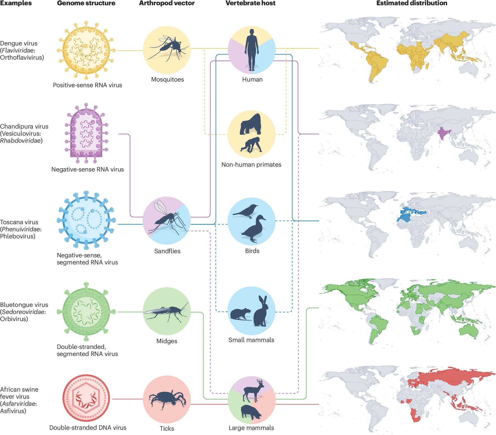
Phylogenetic insights into the transmission dynamics of arthropod-borne viruses
Verity Hill, Simon Dellicour, Marta Giovanetti, Nathan Grubaugh
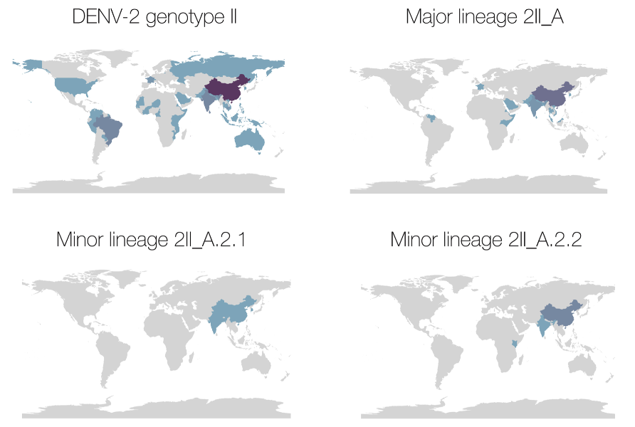
A new lineage nomenclature to aid genomic surveillance of dengue virus
Verity Hill*, Sara Cleemput*, James Siqueira Pereira*, Robert Gifford, Vagner Fonseca [and 32 others], Wim Dumon, Alex Ranieri Jeronimo Lima, Tulio de Oliveira, and Nathan Grubaugh
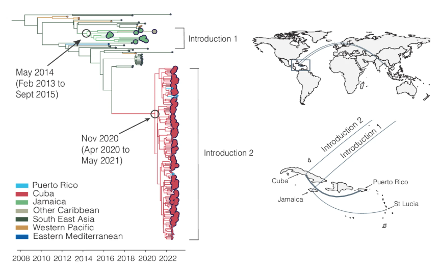
Travel surveillance uncovers dengue virus dynamics and introductions in the Caribbean
Emma Taylor-Salmon*, Verity Hill*, [and 41 others] and Nathan Grubaugh
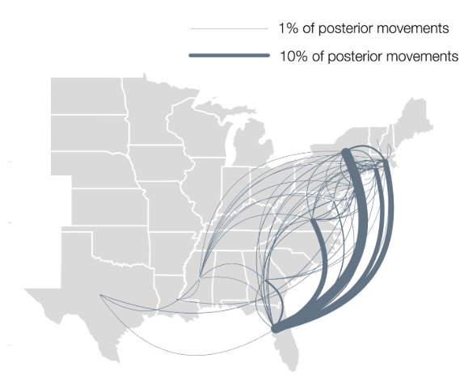
Dynamics of Eastern equine encephalitis virus during the 2019 outbreak in the Northeast United States.
Verity Hill*, Toby Koch*, [and 16 others] Nathan D. Grubaugh
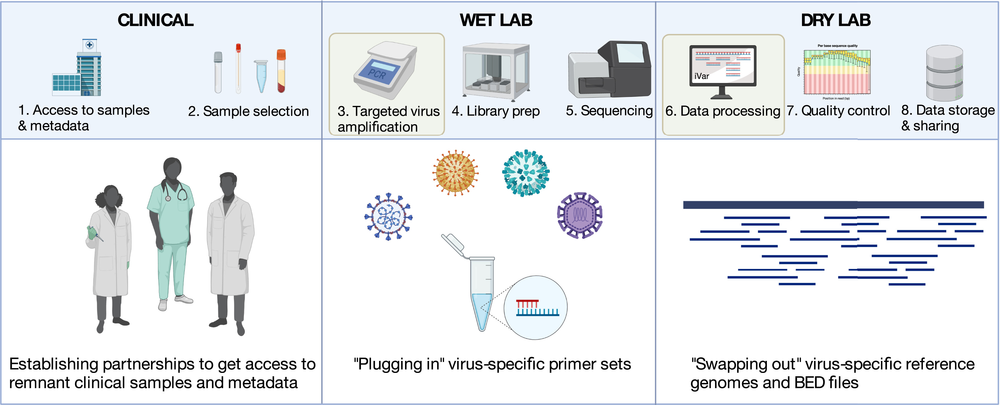
Towards a global virus genomic surveillance network.
Verity Hill, George Githinji, Chantal B.F. Vogels, Ana I. Bento, Chrispin Chaguza, Christine V. F. Carrington, Nathan D. Grubaugh
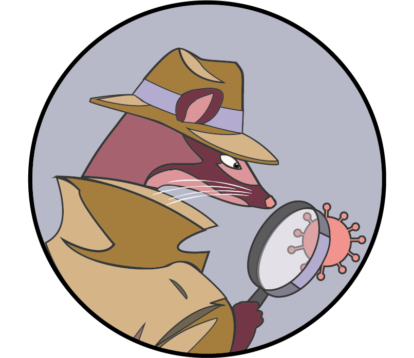
Genomics-informed outbreak investigations of SARS-CoV-2 using civet
Aine O’Toole*, Verity Hill*, Ben Jackson*, Rebecca Dewar*, Nikita Sahadeo* [and 16 others] and Andrew Rambaut
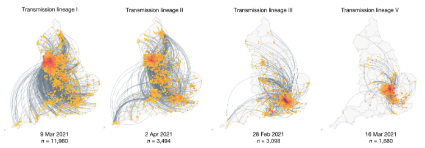
Context-specific emergence and growth of the SARS-CoV-2 Delta variant
John T. McCrone*, Verity Hill*, Sumali Bajaj*, Rosario Evans Pena* [and 37 others] and Moritz Kramer
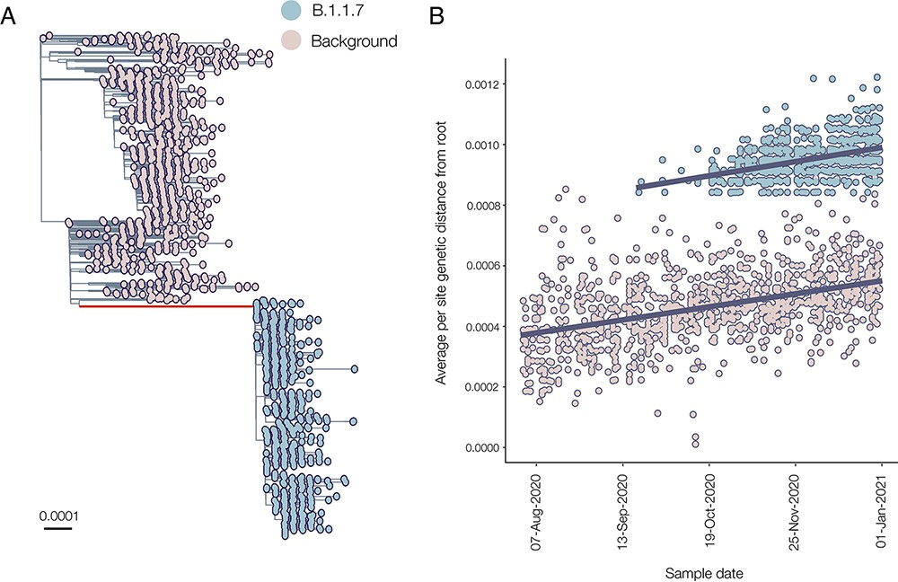
The origins and molecular evolution of SARS-CoV-2 lineage B.1.17 in the UK
Verity Hill, Louis Du Plessis, Thomas P Peacock [and 26 others] and Andrew Rambaut
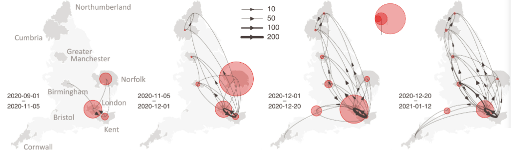
Spatiotemporal invasion dynamics of SARS-COV-2 lineage B.1.1.7 emergence
Moritz UG Kraemer*, Verity Hill*, Christopher Ruis*, Simon Dellicour*, Sumali Bajaj* [and 19 others] and Oliver Pybus
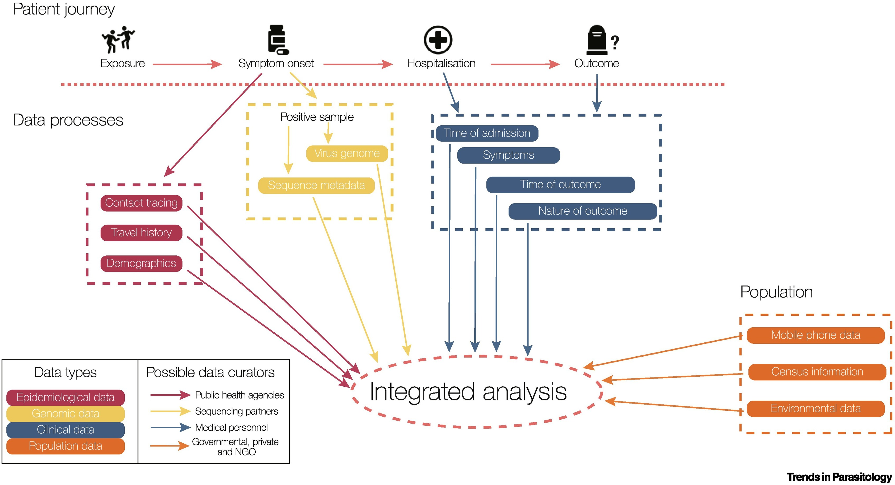
Progress and Challenges in Genomic Epidemiology
Verity Hill,Christopher Ruis, Sumali Bajaj, Oliver Pybus, Moritz Kraemer
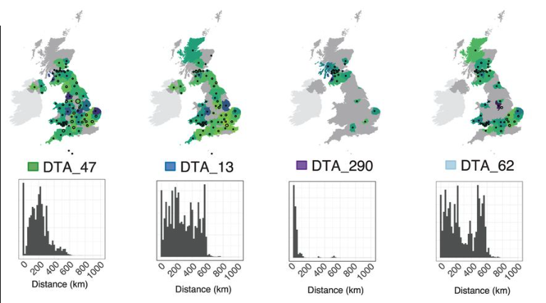
Establishment and lineage dynamics of the SARS-CoV-2 epidemic in the UK
Louis du Plessis*, John T McCrone*, Alexander E Zarebski*, Verity Hill*, Christopher Ruis* [and 20 others] and Oliver G Pybus
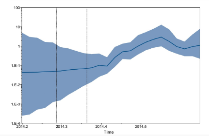
Bayesian estimation of past population dynamics in BEAST 1.10 using the Skygrid coalescent model
Verity Hill and Guy Baele